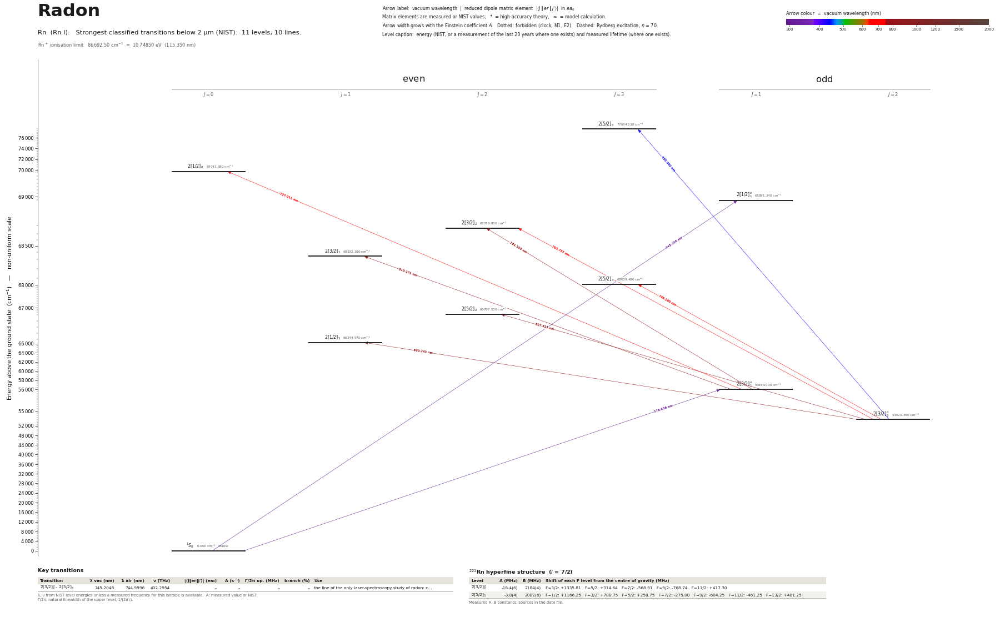

Radon energy level diagram
Energy levels and transitions of neutral radon (Rn I): the 10 strongest classified lines below 2 µm from the NIST Atomic Spectra Database and the 11 levels they connect, each line with its vacuum wavelength, frequency and, for 0 of them, the reduced dipole matrix element derived from the NIST transition rate. Measured lifetimes, transition rates, hyperfine constants and isotope shifts from the literature are included, each with its citation.
Hover a line or a level to isolate it, click to keep it selected. Scroll to zoom, drag to move.

Download: diagram (PDF) diagram (SVG) transitions (CSV) levels (CSV) source code

Key transitions of radon
| Transition | λ vac (nm) | λ air (nm) | ν (THz) | |⟨J‖er‖J′⟩| (ea₀) | A (s⁻¹) | Γ/2π up. (MHz) | branch (%) | Use |
|---|---|---|---|---|---|---|---|---|
| 2[3/2]°2 – 2[5/2]3 | 745.2048 | 744.9996 | 402.2954 | – | – | – | – | the line of the only laser-spectroscopy study of radon: c… |
λ, ν from NIST level energies unless a measured frequency for this isotope is available. A: measured value or NIST. Γ/2π: natural linewidth of the upper level, 1/(2πτ).
221Rn hyperfine structure (I = 7/2)
| Level | A (MHz) | B (MHz) | Shift of each F level from the centre of gravity (MHz) |
|---|---|---|---|
| 2[3/2]°2 | -18.4(6) | 2184(4) | F=3/2: +1335.81 F=5/2: +314.64 F=7/2: -568.91 F=9/2: -768.74 F=11/2: +417.30 |
| 2[5/2]3 | -3.8(4) | 2082(6) | F=1/2: +1166.25 F=3/2: +788.75 F=5/2: +258.75 F=7/2: -275.00 F=9/2: -604.25 F=11/2: -461.25 F=13/2: +481.25 |
Measured A, B constants; sources in the data file.
Listed Rn transitions below 2 µm
| Lower level | Upper level | λ vacuum (nm) | λ air (nm) | ν (THz) | Type | |⟨J‖er‖J′⟩| (ea₀) | A (s⁻¹) | Branching (%) | Source of matrix element / A |
|---|---|---|---|---|---|---|---|---|---|
| 1S0 | 2[1/2]°1 | 145.1561 | – | 2065.3104 | E1 | – | – | – | – |
| 1S0 | 2[3/2]°1 | 178.6064 | – | 1678.5089 | E1 | – | – | – | – |
| 2[3/2]°2 | 2[5/2]3 | 435.0819 | 434.9596 | 689.0484 | E1 | – | – | – | – |
| 2[3/2]°2 | 2[3/2]2 | 705.7372 | 705.5427 | 424.7933 | E1 | – | – | – | – |
| 2[3/2]°1 | 2[1/2]0 | 727.0110 | 726.8107 | 412.3630 | E1 | – | – | – | – |
| 2[3/2]°2 | 2[5/2]3 | 745.2048 | 744.9996 | 402.2954 | E1 | – | – | – | – |
| 2[3/2]°1 | 2[3/2]2 | 781.1951 | 780.9802 | 383.7613 | E1 | – | – | – | – |
| 2[3/2]°1 | 2[3/2]1 | 810.1712 | 809.9485 | 370.0359 | E1 | – | – | – | – |
| 2[3/2]°2 | 2[5/2]2 | 827.3228 | 827.0955 | 362.3645 | E1 | – | – | – | – |
| 2[3/2]°2 | 2[1/2]1 | 860.2432 | 860.0069 | 348.4973 | E1 | – | – | – | – |
Reduced dipole matrix elements follow the convention A = ω³|d|²/(3πε₀ħc³(2J′+1)), with J′ the upper level. Tags show where a number comes from: measured, NIST compilation, high-accuracy theory, or a model calculation.
Rn energy levels
| Level | Energy (cm⁻¹) | J | Parity | Lifetime | gJ | Hyperfine A (MHz) | Hyperfine B (MHz) | Lifetime source | Hyperfine source |
|---|---|---|---|---|---|---|---|---|---|
| 1S0 | 0.000 | 0 | even | stable | – | – | – | – | – |
| 2[3/2]°2 | 54620.350 | 2 | odd | – | – | -18.4 | 2184.4 | – | Borchers, Neugart, Otten, Duong, Ulm, Wendt and the ISOLDE Collaboration, Hyperfine Inter… |
| 2[3/2]°1 | 55989.030 | 1 | odd | – | – | – | – | – | – |
| 2[1/2]1 | 66244.970 | 1 | even | – | – | – | – | – | – |
| 2[5/2]2 | 66707.530 | 2 | even | – | – | – | – | – | – |
| 2[5/2]3 | 68039.480 | 3 | even | – | – | -3.75 | 2082.5 | – | Borchers, Neugart, Otten, Duong, Ulm, Wendt and the ISOLDE Collaboration, Hyperfine Inter… |
| 2[3/2]1 | 68332.100 | 1 | even | – | – | – | – | – | – |
| 2[3/2]2 | 68789.930 | 2 | even | – | – | – | – | – | – |
| 2[1/2]°1 | 68891.340 | 1 | odd | – | – | – | – | – | – |
| 2[1/2]0 | 69743.980 | 0 | even | – | – | – | – | – | – |
| 2[5/2]3 | 77604.530 | 3 | even | – | – | – | – | – | – |
Rn⁺ ionisation limit 86692.50 cm⁻¹ = 10.74850 eV (115.350 nm)
Sources
- Borchers, Neugart, Otten, Duong, Ulm, Wendt and the ISOLDE Collaboration, Hyperfine Inter…
- NIST ASD level energies
Radon is the least-studied of these atoms: apart from the classical emission spectra there is a single collinear-laser-spectroscopy study (ISOLDE, published 1987) on the 745 nm line, whose hyperfine constants were read in the third pass (2026-10-02) from the CERN preprint scan of the conference paper (data/literature/pdf/Rn_Borchers_1987.pdf); its isotope shifts exist only as a graph. Nuclear spins, half-lives and moments are taken from the IAEA table; moments printed there for even-even isotopes belong to isomers and were left out. The site's default isotope (222Rn) has I = 0, so no hyperfine structure applies to it.
Atoms with measured data
- Lithium-632 levels, 85 lines
- Lithium-732 levels, 85 lines
- Beryllium-917 levels, 26 lines
- Sodium-2336 levels, 106 lines
- Magnesium-2418 levels, 61 lines
- Magnesium-2518 levels, 61 lines
- Potassium-3934 levels, 84 lines
- Potassium-4034 levels, 84 lines
- Potassium-4134 levels, 84 lines
- Calcium-4035 levels, 61 lines
- Calcium-4335 levels, 61 lines
- Rubidium-8536 levels, 94 lines
- Rubidium-8736 levels, 94 lines
- Strontium-8740 levels, 70 lines
- Strontium-8840 levels, 70 lines
- Caesium-13331 levels, 79 lines
- Barium-13744 levels, 89 lines
- Barium-13844 levels, 89 lines
- Dysprosium-16339 levels, 55 lines
- Dysprosium-16439 levels, 55 lines
- Ytterbium-17118 levels, 26 lines
- Ytterbium-17418 levels, 26 lines